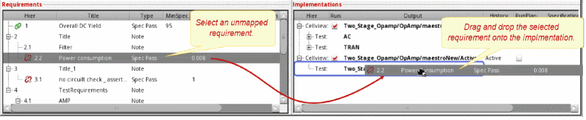
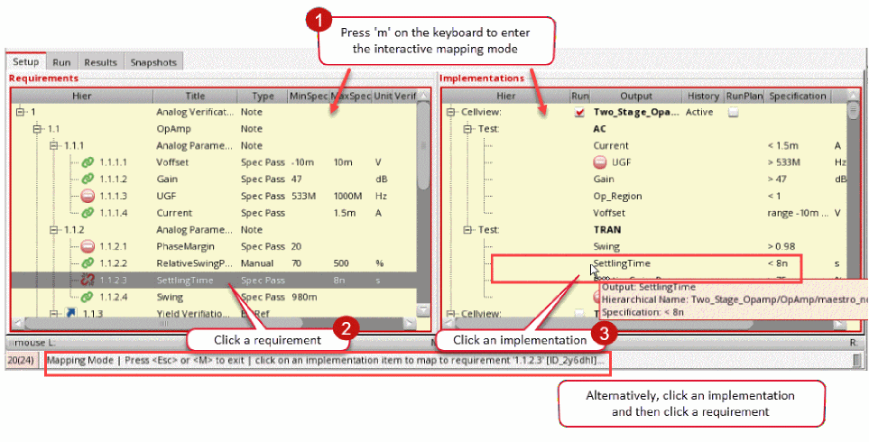

4
Implementations and Mappings in Virtuoso ADE Verifier
This topic provides information on how you manage implementations and their mappings with requirements in Virtuoso ADE Verifier (Verifier).
Implementations are maestro cellviews and their tests and outputs that you map to their corresponding requirements. Verifier lets you add implementation cellviews, which you can rearrange, and through which you can search and filter. You can also open the implementation cellviews in their native application, such as ADE Assembler.
You can run implementation cellviews from Verifier to capture results, or load existing run results. Verifier uses these results, along with other settings, to determine the verification status. For information on running implementations, see Implementation Runs in ADE Verifier.
Related Topics
Mappings between Implementations and Requirements
Details of an Implementation
An implementation represents the simulation setup, testbench, or the measured output of a verification requirement. Implementation data is stored in cellviews of the type maestro. You verification project can have a list of unique implementation cellview–history entries. You can change the order of implementations cellviews in this list.
To determine the status of a requirement, Verifier uses the information of the implementations mapped to that requirement with other relevant settings. For example, you can set a requirement to pass verification if the mapped implementation is simulated successfully. In this case, Verifier checks the simulation status of the mapped implementation to determine the verification status of the requirement.
The following table describes the details of an implementation.
| Column | Description |
|---|---|
|
The expandable and collapsible hierarchy level of implementations. |
|
|
The option to run the implementation from Verifier. Select this check box if you want to initiate the run from Verifier, or clear to load the test results from the selected history when the implementation cellview is run from outside Verifier. |
|
|
The name of the simulation output to be used for determining the verification result. Outputs are measurements and assertions that can be evaluated using the simulation results. The Output column displays the cellview and test information in addition to the outputs. Therefore, the Library, Cell, View, and Test columns are not displayed by default.
Ensure that the output name is a non-empty string which is not '.' or '..' and does not contain whitespaces or the characters: '~\\*/<>'?|\"()=;&$'." |
|
|
The option to select the cellview history. When you initiate the simulation of a local implementation from Verifier, a session is loaded with the implementation cellview where the specified history is set as the active history within that session. By default, a new history is created outside the cellview when the implementation is run.
When you change the history of an implementation, Verifier saves the Run check box settings and the mapping information for the selected history if the RunPlan mode is same between the two histories. A warning message is also displayed to warn about mapping loss as the consequence of the selected history changes (the RunPlan mode, Test, and Output changes). Ensure that the history name is a non-empty string which is not '.' or '..' and does not contain whitespaces or the characters: '~\\*/<>'?|\"()=;&$'." |
|
|
The name of the implementation test.
Ensure that the test name is a non-empty string which is not '.' or '..' and does not contain whitespaces or the characters: '~\\*/<>'?|\"()=;&$'." |
|
|
The measurement of output from the implementation cellview that is loaded from ADE Assembler. The values of these implementation output details are the same as those in the Assembler cellview. |
|
|
The specification value for implementation output even if it is Spec Check Fail. The Spec check fail icon is shown besides the specification value. The value is shown in red color and the tool tip displays an error message.
Unmapped Implementation: Displays the specification value for implementation output even if it does not map to any requirement. |
|
|
The short reference used to specify a selected library, cell, view, test, or output. |
|
|
The mapping status of the implementation.
The following are the possible mapping status of implementations:
|
|
|
The hierarchical numbering of mapped requirements. Hierarchical number: Indicates that the implementation is mapped to the hierarchical number of the requirement, specified in green. For more details, see the environment variable includeOnlyMappableOutputsInCount. |
The following figure shows a list of implementations. For more details, see Implementations.
You can show or hide the columns of the implementations list in the Setup tab. For this, right-click anywhere on the column heading in the implementations area and select the columns you want to show. Verifier hides the columns that are not selected.
To sort columns, you can use the drag-and-drop method and change the display of columns. Additionally, you can specify the default column order and hidden columns by using the environment variables impColumnOrder and impHiddenColumns.
Disabled Runs, Reliability Analyses, Tests, or Outputs for Implementation Cellviews
You can include a run, reliability analysis, test, or output that is disabled in ADE Assembler when you add or update an implementation in your Verifier cellview. To do this, select the Include disabled run, reliability, test, or output for implementation setting in the Preferences form.
The disabled test, run, or output shows with a gray background in Verifier. When selected, this setting shows the disabled tests, runs, or outputs in the implementation.
This setting is applicable only for newly added implementations or the next time you load an existing implementation. For example:
When you move the mouse pointer on a disabled run or test in the Implementations pane, the tooltip text shows the following:
-
For a run disabled in Assembler but enabled in Verifier: Disabled Run: <
run name> (Locally enabled). -
For a test disabled in Assembler but enabled in Verifier: Disabled Test: <
test name>. -
For a run enabled in Assembler but disabled in Verifier: <
run name> (Locally disabled). -
For a test enabled in Assembler but disabled in Verifier: <
test name> (Locally disabled).
The requirements mapped to a disabled test, run, or output shows Spec Check Fail in the OverallStatus column of the Results tab and Disabled in the Status column of the Run tab. The Information assistant shows a count of disabled mappings.
Modification of the Enabled or Disabled State
You can edit the enabled or disabled state of implementation runs or tests in Verifier. To do this, use Allow editing the enabled or disabled state for implementation run or test in the Preferences form. When you select one of these, the check box in the Run column of the Implementations pane becomes editable. You can select these check boxes to enable the run or test locally and run simulations on these local sets in Verifier. Selecting these check boxes removes the gray background from these runs or tests and adds a pale blue background to the Run column. The pale blue background behind a test name indicates that the run or test state is different in Verifier from the maestro cellview.
Assume that you have an ADE Assembler cellview Two_Stage_Opamp/OpAmp/maestro_Run_Plan/Active with two run plans Run.0 and Run.1 that contain two tests AC and TRAN each. Assume that you have disabled Run.1 and the test TRAN in Run.0.You want to run simulations on these run plans or tests but you need to make modifications to the enabled or disabled status of these runs or tests. Instead of opening Assembler, making the changes, and then returning to the Verifier cellview, you can make these modifications directly in Verifier. You add this cellview as an implementation and select the preference option Include disabled run, reliability, test, or output for implementation. The following illustration shows an example of the Verifier cellview.
Now, you select the preference Allow editing the enabled or disabled state for implementation run or test and check boxes in the Run column become editable, as shown below.
Deselect the run plan Run.0 and select Run.1. The following illustration shows the pale blue background added to highlight the changes.
You can proceed to run simulations on these variants of the tests and run plans defined in Assembler and view the results in Verifier.
- You can revert the local changes by selecting the implementation and choosing the shortcut menu command Restore Enabled or Disabled State.
- When you deselect the Run check box and switch to a different history for an implementation, the states are reverted to the original settings from the implementation cellview. After this, the local changes of the states are cleared.
- Choosing the shortcut menu command Update Implementation in the Implementations pane does not change the locally disabled state for existing runs or tests.
- It is recommended that you also select Include disabled run, reliability, test, or output for implementation when using this preference.
- Deselecting the Allow editing the enabled or disabled state for implementation run or test preference disables the check boxes in the Run column and restores the enabled or disabled state from the implementation.
Adding Implementations
In a
This section describes the following topics:
- Adding an Implementation Manually
- Implementations with Wave Specifications
- Implementations with ADE Assembler Run Plans
- Creating Outputs in Implementations Using Requirements
- Editing Outputs in Implementations
- Adding Multiple Implementations
- Importing Implementations from Another ADE Verifier Cellview
It is possible that an implementation cellview you added was renamed, moved, or deleted. In this case, Verifier prompts you to specify the new location and name, remove the reference, or cancel the prompt. When you specify the new location or name, the mapping information is retained.
Adding an Implementation Manually
You can add an implementation cellview to the implementations list manually. The entry for the cellview history must be unique in the list.
To add an implementation manually:
- Click the Setup tab to display the implementations area.
-
Right-click in the empty area or an implementation cellview and choose Add Implementation.
The Add Implementation Form form displays. - Select the library, cell, and view of the implementation.
-
Click OK.
If the selected cellview has a singleActivehistory, it is used as the default history for the implementation. If it has multiple histories, the Implementation History Item form displays. Select the history that you want to use and click OK.
The implementation cellview appears as the last entry in the implementations list.
When you run the cellview from Verifier, a session is loaded with the implementation cellview where the specified history is set as the active history within that session. If you do not want to initiate the simulation from Verifier, you load the results from the selected history.
Adding Multiple Implementations
Verifier lets you add multiple implementation cellviews using the Edit Typical Value Setup Form form. You can also create their corresponding requirements.
To include multiple implementations:
-
To start importing implementations in the currently opened Verifier session, choose Tools – Add Implementation Cellviews.
The Edit Typical Value Setup Form form appears.
- Specify the necessary information to add multiple implementations:
- Click OK.
Based on the specified information, Verifier adds the implementations, and optionally creates and maps requirements.
Implementations with Wave Specifications
Verifier lets you add wave specifications defined for signals and wave expressions defined in maestro cellviews. These specifications appear as wave in the implementation tree for the outputs and can be mapped to a requirement of type Spec Pass and Ran OK. However, the spec check fails if you map the output with wave spec to a requirement of the Spec Pass containing the MinSpec and/or MaxSpec values. For details, refer to
On the Results tab, you can view the wave specification in the results tree and also view the details of Waveform Compare Setup in the Information assistant.
Requirements that contain wave in the Specification column of the Implementations pane are skipped during evaluation of metric prefixes. See Evaluation of Metric Prefix.
Implementations with ADE Assembler Run Plans
Run plans in ADE Assembler provide the capability to create multiple variations of a setup within a single session, where each run has its own setup details that override the settings in the active history setup. You can also run an implementation cellview that includes Assembler run plans similar to other Verifier cellviews. On the Run tab, the RunName column shows the run name for the implementation cellviews with run setup. For details, see Implementations with ADE Assembler Run Plans and
You can add ADE Assembler cellviews with run plan setup in Verifier. The Run Plan Mode check box is available in the Add Implementation form. This check box is disabled by default. However, when you add the cellviews with run plan setup, the Run Plan Mode check box is enabled.
When you add cellviews with run plan setup, the check box in the RunPlan column of the cellview in the implementation setup gets selected. Run name also gets listed in the Hierarchy tree.
The RunPlan column shows whether a run plan is to be used for an implementation. If you choose Active in the History column, you can enable or disable the run plan mode and run the implementation accordingly. For other setups of history, the check box is selected automatically.
The Run tab also shows the Run button for each RunPlan run. However, the Run button is disabled when the run is disabled locally within Verifier or in ADE Assembler. Additionally, the Run button is not displayed for those implementations for which the Run check box is disabled.
When the preference Allow editing the enabled or disabled state for implementation run or test is enabled, you can simulate a RunPlan run even when it is disabled within Verifier. You can select multiple disabled runs for simulation. The following illustration shows a simulation running for an implementation and a RunPlan run. The Run check box is deselected for both these runs.
You can simulate a RunPlan run only when it is enabled within Verifier or ADE Assembler. You can select multiple runs for simulation. The following figure shows a simulation running for an implementation and a RunPlan run. The Run check box is selected for both these runs.
- If there is an implementation cellview added with Active setup of history, it cannot be added again as an implementation cellview with run plan setup. Use the cellview that has already been added in the implementation tree, select another cellview to be added, or select another setup of history in the current cellview.
-
All the runs including the ones skipped for simulations because of failed conditions are shown when you add the RunPlan history as an implementation. In addition, these runs are shown even if the Run check box is deselected.
-
Implementations with run plans containing run conditions might show different status during the run. Initially, only the first simulation is considered to be running. Depending on the run conditions, other simulations are sequentially started. Verifier shows the simulations that are running or queued for a run at all times. Before a run starts, you see the status as
Pending. When the run starts and the first simulation point is complete, the Status column shows a0%progress. Completion of the first simulation initiates the run conditions and schedules the next consecutive simulations. As the run progresses, you see a change in the run completion percentage and the number of runs completed. After the runs are complete, you see a100%run status in green.
Customizing Simulations with ADE Assembler Cellviews
Verifier lets you open implementations, modify these implementations, and then run simulations with the modified implementations. This requires reusing the implementation session, which is the ADE Assembler cellview. Verifier remembers the cellview that has been opened and modified and reuses the session information to run simulations.
To run simulations with modified implementations:
-
Set the loadToActiveWhileViewAndReuseSession environment variable to
tin the CIW. -
Right-click and select the View Implementation Results command in the Implementations pane.
The ADE Assembler cellview is opened in read-only mode and the last history of the simulation run from Verifier is loaded in the Results tab in ADE Assembler. The history can be any history exceptActive. When the history name specified in Verifier matches the history loaded in ADE Assembler, the session information can be reused to run simulations.
The ADE Assembler cellview stays open. -
Make changes in the opened ADE Assembler cellview.
Modifying and reusing sessions to run simulations is only available with the Local Run mode in Verifier. This feature is not available with the other run modes - Click the Run button on the main toolbar in ADE Verifier.
The simulations for these opened implementations are run with the modifications, but all remaining implementations are run with the default implementation settings.
Creating Outputs in Implementations Using Requirements
In a top-down flow, adding implementations in large setups and specifying mappings takes significant time. To save this mapping time, you can add outputs into implementation cellviews by dragging requirements and dropping them on a test in an implementation. The newly added outputs are mapped to corresponding requirements automatically and added to the maestro cellviews in ADE Assembler.
- You can drag only the requirement of type 'Spec Pass' to a test.
- Ensure that the target is a test in the specified implementation.
- Validate that the implementation is using an 'Active' history.
- You cannot create outputs for a history except when 'Active' and when Run Plan is enabled.
To create outputs for implementations:
-
Add an implementation in the Verifier cellview. The implementation can be completely empty or can contain some testbench information.
-
Drag and drop requirements into the implementation.
Output expressions are created for those implementations and mapped to the requirements automatically.
Themaestrocellview in ADE Assembler is updated automatically.
Editing Outputs in Implementations
- Select the implementation that has the output that you want to modify in the Implementations pane.
- Do one of the following:
-
Click another field or press
Enterto save the details.
The implementation is updated with the new value.
Importing Implementations from Another ADE Verifier Cellview
Verifier lets you import implementations from another cellview of the type verifier. You can copy or reference the implementations stored in another cellview. To change a referenced implementation, you must modify its source.
The following figure shows how you import implementations from another cellview.
To include the implementations from another cellview:
-
Choose File – Import – Verifier Cellview.
The Import Verifier Cellview Form form displays. - Choose the Library, Cell and View to specify the source cellview.
-
Do one of the following:
- Click Copy to copy the implementations from the source cellview. Use this option if you want to modify the imported list.
-
Click Reference to include the implementations by reference. Use this option if you want to maintain the implementations list in the source. The implementations–requirements mappings in the source will be maintained.
- Click OK.
The implementations-requirements are included in the current Verifier session. The referenced implementation cellviews and tests appear as Read-Only in the Implementations and Requirements panes, and the Requirements Editor assistant.
- A Verifier session can have only unique implementation cellview–history entries.
- Verifier includes the requirement–implementation mappings defined in the source cellview if the corresponding requirement IDs exist in the current cellview.
- You cannot change the referenced implementations list. To change the list, modify the source cellview. For example, you cannot overwrite the implementation specification with the specification of its mapped requirement.
- If a referenced implementation cellview was renamed, moved, or deleted, Verifier lets you choose Edit Cellview or Update Cellview. When you edit or update the cellview, the mapping information is retained.
Implementation Run Modes
Verifier supports the Single Run, Sweeps and Corners and the Monte Carlo Sampling run modes.
When an implementation cellview is set to use the Single Run, Sweeps and Corners run mode, you can map its outputs to requirements. For verification, Verifier compares the defined output specification values with the corresponding simulation results.
When an implementation cellview is set to use the Monte Carlo Sampling run mode, Verifier displays the following sections:
- Output Values: This section displays the outputs, with values, of the tests in the implementation cellview.
- Statistical Values: This section displays the yield, mean, standard deviation, and CPK of each output measurement of the tests in the implementation cellview. It also shows the overall yield of each test.
You can map Monte Carlo outputs and statistical values with requirements. Ensure that the requirements that are mapped to Monte Carlo statistical values have specifications.
The specification values used for these statistical parameters are different from the output specification values in ADE Assembler or ADE Explorer. For example, consider that you have a specification value of DCGain as >10 in ADE Assembler. Your Monte Carlo simulation can provide you a yield measurement of 98% for DCGain. The specification value specified in Verifier for such a statistical parameter references the statistical values. This means that a specification value of minimum 0.97 for the requirement mapped to DCGain::Yield will ensure that the requirement passes.
You can start the Single Run, Sweeps and Corners or the Monte Carlo Sampling run of an implementation cellview from Verifier. It is also possible to run the implementation cellview outside Verifier and load the results in Verifier. For Monte Carlo run mode, Verifier can retrieve the statistical values from the relevant history of the cellview.
Mappings between Implementations and Requirements
You can map implementation cellviews, tests, and outputs to their corresponding requirements of the type Spec Pass, Ran OK, and Manual. If the implementation cellview uses the Monte Carlo Sampling run mode, you can map that cellview, its tests, output values, and statistical values with requirements. Ensure that the requirements that you want to map to Monte Carlo statistical values have specifications. For details, see Implementation Run Modes.
It is possible to map multiple implementations with multiple requirements, unless the Map only one requirement to one implementation preference option is enabled. If you want to map multiple requirements with an implementation, ensure that the requirements have the same specification.
If the verification project is set for a
Verifier uses the mapping, along with simulation results and preference settings, to determine the verification status of requirements. You can aim to achieve 100 percent mapping if you want to ensure that each test and each output in each implementation cellview is mapped to a requirement. It is not necessary to achieve 100 percent mapping for all the implementations. The correctness of the overall verification status depends on the completeness of the verification plan and mappings.
The overall mapping percentage displays in the Overall Progress bar. The Mapped column in the implementations pane also displays the percentage of the mapped implementations in the unmapped cellviews and tests.
Related Topics
Mapping Implementations to Requirements Using the Shortcut Menu
Mapping Implementations to Requirements Using Bindkeys
Mapping Implementations to Requirements Using the Mapping Mode
Mapping Implementations to Requirements Using the Shortcut Menu
The following figure illustrates mapping implementations to their requirements the using shortcut menu option Map.
To map implementations to requirements:
-
Select the requirements and implementations.
You can use theCtrlkey to select multiple entries located in different places in the list, or theShiftkey to select consecutive entries. - Right-click and choose Map.
Verifier maps the selected implementations with the selected requirements.
The mapped entries get highlighted in light gray. Click an entry to select its mapped entries.
Mapping Implementations to Requirements Using Bindkeys
You can map implementation cellviews to requirements using the bindkey Ctrl + M.
To map implementations and requirements using the bindkey:
- Click on a requirement in the Requirements pane.
-
Press the
Ctrlkey and click on an implementation in the Implementations pane. -
Press
Ctrl + M. The requirement and implementation are mapped as illustrated below.
Mapping Implementations to Requirements Using the Mapping Mode
Verifier lets you expedite the mapping of implementation cellviews to requirements using an interactive Mapping Mode.
To use the interactive Mapping Mode:
-
Do one of the following:
- Press 'M' or 'm' to enter the mapping mode.
- Choose Edit – Enter Mapping Mode.
- Click Enter Mapping Mode( ) on the toolbar.
A yellow background outlined in red on the Requirements and Implementations panes indicates that the Mapping Mode is enabled. -
Do one of the following:
- Click a requirement and then click an implementation.
- Click an implementation and then click a requirement.
The requirement and implementation are mapped.
 - To exit the Mapping Mode:
-
To delete an existing mapping, right-click the mapped requirement or implementation and select Delete Mapping.
You can also use the Mapping Mode to drag and drop requirements on to implementations to create mappings. To use the drag-and-drop method in the Mapping Mode, select a requirement and drop it onto a required implementation. This automatically maps the requirements and the implementation. For more information, see Reassignment of Requirements.
Managing Mappings
To copy the implementation–requirement mappings:
Verifier copies the mappings of the selected requirement or object in the implementation.
To apply the copied implementation–requirement mappings:
Verifier applies the copied mappings to the selected requirement or object in the implementation.
To remove the implementation–requirement mappings:
Verifier removes the mappings from all the selected requirements and implementations.
Exporting Mappings
Mappings between requirements and implementations in a cellview can be saved and exported as a CSV or Microsoft Excel file to be used in other cellviews, if required.
To export the implementation–requirement mappings in the Verifier setup:
-
Choose File – Export – Mapping.
The Export Mapping form is displayed. - Choose the required file format. The available formats are CSV and Excel.
- Click the browse button and specify a new or existing file name in the Specify a File form.
- Click Save.
- Click OK on the Export Mapping form.
The implementation-requirement mappings are saved in the specified file format.
Importing Mappings
Exported mappings between requirements and implementations from a cellview can be used in a Verifier setup by importing the mappings using a CSV or Microsoft Excel file, if required.
To import the implementation–requirement mappings in the Verifier setup:
-
Choose File – Import – Mapping.
The Import Mapping form is displayed. - Choose the required file format. The available formats are CSV and Excel.
- Click the browse button and select an existing file in the Specify a File form.
- Click Open.
- Click OK on the Import Mapping form.
The implementation-requirement mappings are imported in the current setup.
These mappings are in a multi-column format in the file, where the first column is for requirements, and the remaining are for implementation-related details. Here every row consists of a single requirement and mapped implementation details. A requirement that is mapped to multiple implementations has the same requirement name in the first column and the various implementation details in the subsequent columns.
The following list of columns are available in the CSV or Microsoft Excel:
Requirement,Library,Cell,View,History,Run,Test,StatisticalTest,Output,StatisticalOutput,Hierarchy,Title,Type
Here, the Title and Type columns are ignored because they contain the requirement title and type that are not required for mapping.
Additionally, you can use wildcards to edit the mappings by manually modifying one or more of the following columns in the CSV or Microsoft Excel:
Library,Cell,View,History,Run,Test,StatisticalTest,Output,StatisticalOutput
For example, consider the following values in the columns for requirement ID1:
ID1,Two_Stage_Opamp,OpAmp,maestro_MC,*,,AC,,,,1.1,Title,Ran Ok
Here, the value in the History columns is set to *. This will map requirement ID1 to all histories with the matching implementation details.
Opening Implementations
Verifier lets you open an implementation cellview in edit mode. You can also view the simulation results of an implementation in read-only mode. When Verifier opens an implementation cellview, it loads the history you have selected for that implementation.
To open an implementation in edit mode:
The implementation cellview opens its application.
To view simulation results of an implementation cellview whose results are loaded:
To view the simulation log of an implementation cellview whose results are loaded:
- Right-click the implementation and choose View Simulation Log of Implementation Test, and select the test.
The implementation cellview opens in read-only mode and the results display in the relevant application.
If the implementation cellview uses the integrated history management, you receive a popup asking you to convert the cellview to use the separate history management scheme.
Updates in Implementations
Verifier periodically checks for saved changes in the implementation cellviews and updates the setup accordingly.
Updates in the implementation cellview are indicated by the icon. To indicate that the setup needs to be updated, this icon is displayed before the cellview node in the implementation tree. Update the setup by clicking the implementation, and choosing the shortcut menu option Update Implementations in the Setup tab. When you update implementations, Verifier does a quick check for results. Implementations that have the Run check box enabled are always marked as out of date because the setup has changed. For implementations that have the Run check box disabled, Verifier does a quick check with the history name and time stamp to ensure that latest simulation results are used in Verifier. Verifier does a full check with Report Identical History when you enable the Report identical histories before run preference.
To manually check for updates in the implementation cellview, you can choose the Check for Changes in Implementations and Simulation Results option from the Tools menu. When you check for changes in implementations and simulation results and the results show an 'out of date' status, you can select Delete Run Summary Data from the shortcut menu on the Run Tab to ensure that the outdated results are not used.
The Delete Run Summary Data command deletes the run summary data file and the datasheet recorded inside it. You can use the environment variable autoCreateDataSheet to create datasheets when you run simulations or load results in Verifier. During report creation, Verifier creates a link to existing datasheets or triggers report generation for any missing datasheets.
To view external simulation results for an implementation without deselecting the Run check box, select Create Run Summary Data from the shortcut menu on the Run tab. This command loads the external simulation results from the latest history of implementation cellview.
Alternatively, you can select Mark Results as Up-to-date from the shortcut menu to ignore the check and use the results as valid.
Restarting Implementation Jobs
For large designs, it is possible that simulation jobs can be unresponsive in any state for a long time. You might also have some jobs that have been in the Running state for some time but are not completing within the expected duration, This might require that these jobs be restarted.
-
On the Run page, select the implementation that is in the
Runningstate. -
Right-click and select Restart All Jobs from the shortcut menu.
The Restart All Jobs command has a two-fold action. First, it stops all netlisting and simulation jobs for the selected implementation by triggering the Stop All Jobs command in ADE Assembler. Then, it restarts the simulation for the selected implementation, and the run continues with new jobs.
Related Topic
verifRestart (SKILL function)
Modifying Implementations
In Verifier, you can make changes to the library, cell, view, history of an implementation by using the Modify Implementations form. You can also replace an implementation with another implementation. The mapping is retained if the new implementation has the same setup as the previous one.
To modify a single implementation:
- Right-click the implementation in the Setup tab.
-
Choose Modify as shown in the following illustration.
- Specify the changes to the library, cell, view, and history.
- Select Run to enable a simulation run for the selected implementation.
- Click OK to modify the implementation.
To modify multiple implementations:
- Select the required implementations while keeping the Ctrl key pressed.
-
Right-click and choose Modify as illustrated below.
The fields in the form display <various> as shown below for all field properties that have different values. - Specify the changes to the library, cell, view, and history. The selected implementations are modified with the values that you specify in the form. The values of those fields that display <various> are not changed.
- Select Run to enable a simulation run for the selected implementations.
- Click OK to modify the implementations.
Overriding Specifications
You can override the specification set in an implementation with the specification set in the requirement mapped to that implementation. Similarly you can set the requirement specification with the implementation specification. This functionality overrides the unit and the minimum and maximum specification values. It is possible to override the specifications of multiple requirements and implementations.
To override the implementation specification with the mapped requirement specification:
-
Right-click the implementation in the Setup tab.
You can select multiple implementations and then right-click to display the popup menu. -
Choose Overwrite Implementation Specification.
Verifier overrides the implementation specification.
When overriding implementation specifications, these points must be considered:
- The implementation cellview must be editable.
- The specified implementation history must be 'Active’ because only the specifications in active setup of implementation cellview can be overwritten.
- The selection must contain the mapped implementation outputs with specifications which are not wave or overridden.
- The requirement which is mapped to the selected output must be of the type Spec Pass and have either or both of the minimum and maximum limit specified.
- Selecting an implementation highlights the related requirement only. All the other implementations mapped to the same requirement are not highlighted. However, if you select a requirement, all the related implementations are highlighted. Press the Ctrl key to ensure that the selected implementations remain highlighted when you right-click and choose Override Implementation Specification. This is only applicable for implementations with the same specifications.
To override the requirement specification with the mapped implementation specification:
-
Right-click the implementation in the Setup tab.
You can select multiple implementations and then right-click to display the popup menu. -
Choose Overwrite Requirement Specification.
Verifier overrides the requirement specification.
When overriding requirement specifications, these points must be considered:
- The current Verifier session must be editable.
- The selection must contain the mapped implementation outputs with specifications which are not 'wave' or 'overridden'.
- The requirement which is mapped to the selected output must be editable and of the type Spec Pass. This requirement should not be referenced or read-only.
- The specification and unit values of the outputs are also updated automatically in ADE Assembler, if the implementation is open in ADE Assembler for editing.
Deleting Implementations
You can delete the implementation cellviews that you do not need for your verification project. When you remove an implementation cellview, where the cellview, tests, and outputs are mapped to requirements, the mappings are removed. You cannot hide implementation cellviews in Verifier.
To delete an implementation cellview:
-
Do one of the following:
- Right-click the implementation cellview and choose Delete Implementations.
-
Select the implementation cellview and press
Delete.
You can select multiple implementation cellviews for deletion. - Click Yes, when prompted, to confirm the deletion.
Verifier deletes the selected implementation cellviews and associated mappings.
Filters in the Implementation List
It is possible that you have a large implementation list, where locating specific implementations is time-consuming. You can add a filter row in the implementations list to display only specific types of implementations. The filter row is applied to both the requirements hierarchy and the implementations list.
You can also locate implementations using the filter functionality of Verifier.
Related Topics
Filtering Implementations Based on Text Criteria
Filtering Implementations Based on Status
Filtering Implementations Based on Text Criteria
To search implementations with specific text in the hierarchy:
-
Do one of the following:
- Click the Show Filter Row icon on the toolbar.
- Right-click anywhere on the column heading row and choose Filter row.
The Filter row is displayed below the column headings in the Setup, Run and Results tab.
- Type the filter string or number in the required hierarchy column.
As you type, the filter functionality searches the selected field of the implementations and displays the results in the implementations pane.
To use the other features of the filter functionality:
- Enter a name for the filter and click Save Filter to store the search string for later use in the session.
- Click Clear the contents of the filter to remove all filters and show all requirements or implementations.
- Click Delete Filter to delete a saved filter.
Related Topics
Filters in the Implementation List
Filtering Implementations Based on Status
Filtering Implementations Based on Status
To filter the implementations based on their status in the hierarchy:
-
Right-click the implementations area and choose Show.
-
Set the appropriate filter.
The available filter options are:- Mapped – Filters and shows only those implementations that are mapped to a requirement.
- Unmapped – Filters and shows only those implementations that are not mapped to any requirement.
- Spec Check Fail – Filters and shows only those implementations that are mapped to a requirement but have failed the specifications check during verification.
- Disabled – Filters and shows only those implementations that are disabled.
- Filter On Requirements – Filters and shows only those outputs that are mapped to the visible requirements in the Requirements pane.
Ensure that the implementation type that you want to hide is not selected.
Verifier filters the implementations list according to the specified criteria.
Related Topics
Filtering Implementations Based on Text Criteria
Filters in the Implementation List
Mapped and MappedHier Properties
In the Implementations pane, you can view the Mapped and MappedHier columns. These columns display the requirement IDs and the position of the requirement within the hierarchy. However, the data in the column changes in different scenarios.
Example: When all implementations are mapped to requirements:
Here, the Mapped column shows the IDs of the requirement which is mapped to a specific implementation. The MappedHier column shows the hierarchical position of the mapped requirement in numeric format, such as 1.1, 1.2, 1.2.1.
Example: When the implementation cellview and some outputs are not mapped to requirements:
Here, both Mapped and MappedHier columns in the Implementations pane of the cellview show the mapping status in percentages.
For unmapped implementation cellviews, runs or tests, the following calculation expression is used to compute the mapping percentage:
Here, the mappable child item can be a implementation cellview, run, test, output or statistical item.
In the above illustration, the calculation expression is:
Total number of mapped child items = 10.
Total number of mappable child items = 13.
Example: When the implementation and tests are not mapped:
Here, both Mapped and MappedHier columns in the Implementations pane of the cellview show the mapping status in percentages.
For unmapped implementation cellviews, runs or tests, the following calculation expression is used to compute the mapping percentage:
Here, the mappable child item can be a implementation cellview, run, test, output or statistical item.
In the above illustration, the calculation expression for the implementation is:
Total number of mapped outputs of the implementation = 8
Total number of mappable tests in the implementation = 13
The calculation expression for test AC is:
The calculation expression for test TRAN is:
Typical Value Setup
The typical value feature in Verifier is mainly used for reporting and does not include verification. This feature is used to define a combined set of sweep or corner variables, parameters, or model files from all the implementations added in Verifier. From this combined set, you can identify a set of parameter values that match a typical point of variables or parameters defined in an implementation. This set of parameter values is assumed to be 'typical' in the current Verifier session.
To define the typical value for all implementations in Verifier, click Tools – Typical Value Setup. To setup the value based on the parameters, variables, or model files from the selected implementation, right-click an implementation and select the option Edit Typical Value Setup.
Consider these important points:
- Ensure that you specify a common definition for typical across all the implementations in a project.
-
Model Files is a file name that includes the absolute or relative path. The Corners Setup in ADE Assembler and the Typical Value Setup in Verifier display only the name of the model file as shown below:
However, for comparison of the typical values, Verifier uses<model> <name>gpdk045.scs</name> ... <modelFile>./gpdk045.scs</modelFile> <modelSection>fs</modelSection> </model>modelFileand not thename. - In the current Verifier session, there should only be one common definition for typical across all the implementations.
- In this form, Model Files is not editable and would only be set in the Edit Typical Value Setup form when the selected corner has model files.
- The typical definition is a global definition per Verifier session. In most cases there would even be only one global definition of 'typical' for a given project/group.
- In order to reuse the typical setup between multiple Verifier sessions within the same project, the settings can be exported and imported.
- In this form, the item with an empty value is ignored during comparison with the real parameters used for each data point.
-
If the setup is modified, the implementations on the Run tab are marked as
out-of-date. You need to re-run or re-load the implementations to evaluate the typical value with new settings. -
For a normal value coming out of a Monte Carlo run,
variousis returned as a typical value because of multiple matched points.
The typical value is shown in the Typical Value column of the Results tab and the Information assistant. Also, it could be exported to an CSV or Excel file or other reports.
Related Topics
Setting Up the Typical Value for Implementations
Setting Up the Typical Value for Implementations
To import the typical data from a CSV file or to add it one by one:
The column headers in the CSV file must contain 'Name,Value' where the name is a unique single-line text and the value is a number. You can modify these values in the form.
Verifier automatically removes any white spaces when you do the following:
- Specify a typical value that has white spaces at the beginning, center, or at the end
- Import the typical values from a comma-separated (CSV) file;
- Load the typical values containing white spaces from an existing Verifier cellview from an old version
You can export the typical values with the other results by choosing File – Export.
To set up the typical value for all the implementations directly:
- Click Tools – Typical Value Setup.
-
Add the variable or parameter in the form by using one of the following methods.
-
Right-click and select Add.
Specify a unique name in the Add dialog box and a numeric value in the CurrentValue column by double-clicking it. -
Right-click in the empty area, variable, or parameter item and select Import from CSV.
Ensure that the column headers of the specified CSV contains the 'Name,Value'. The name must be unique one-liner text without spaces. The value must be blank or a number.
-
Right-click and select Add.
- Click OK to save the settings.
For details, see Edit Typical Value Setup Form.
To modify or set up the typical value based on the selected implementation cellview:
-
Right-click and select Edit Typical Value Setup in the Implementations table.
By default, all global variables and parameters are loaded and shown on the form.
Current Value indicates the real value for the variable or parameter in the implementation cellview.
Typical indicates the defined value for this variable or parameter that is used to look for the required data point. - Select a corner name from the corresponding drop-down list box. The variables, parameters, or model files for the specified corner are loaded from the typical and corner setup. The Current Value is overwritten by the corner value for the given variable or parameter.
-
Select one of the following:
- Double-click the Typical column to specify the value.
-
Right-click and select Overwrite Typical to overwrite the model file path and the section.
- Click OK to save the settings.
For details, see Edit Typical Value Setup Form.
To identify the various indicates that there are multiple matched data points. You need to re-run or re-load the implementation when you have modified the typical value setup.
To report the typical value, do one of the following:
-
Click File – Export.
The typical value would be exported with requirement properties and other result information. -
Click Tools – Publish HTML Report.
The typical value would be shown in the HTML report.
Related Topics
Project Directory Setup
By default, Verifier uses the default project directory to access read-only history data and run simulations in read-only mode. You can create additional project directories for implementations for which you have the required read-access permissions. These additional project directories allow you to access read-only histories owned by other users from the ADE Assembler setup.
While performing read-only operations, such as fetching implementation details or results from an implementation history, Verifier searches for the information in the default project directory as well as other specified directories.
To view or load read-only histories that belong to other users, you must add the project directories of other users to the implementation.
Consider a scenario when user1 creates a maestro cellview impl1 in ADE Assembler and runs read-only simulations. User2 creates a new Verifier cellview and adds impl1 in it. In this case, Verifier shows all histories for which the user has write permission and hides read-only histories from user1.
User2 then adds the project directory used by user1, for example /disk/projdirs/user1/simulation/ to impl1. In addition to all the writable histories of impl1 and read-only histories of user2, Verifier also shows all read-only histories from user1.
When user2 runs a simulation on impl1, the results are saved into /disk/projdirs/user2/simulation. The Results tab in Verifier shows the simulation results.
When user1 opens the same Verifier view, the latest history created by user2 is not visible because the default project directory is the same as the additional project directory /disk/projdirs/user1/simulation. When user1 adds /disk/projdirs/user2/ to the list of additional project directories, both user1 and user2 can view all histories in the Verifier cellview.
Related Topics
Opening the Project Directory Setup
Adding and Removing a Project Directory
Modifying and Saving a Project Directory
Histories from the Project Directory Setup
Opening the Project Directory Setup
To access the project directory setup individually for a single implementation:
- Select an implementation in the Implementations pane of the Setup tab.
- Choose the shortcut menu command Edit Project Directory Setup.
The Project Directory Setup form appears.

The Project Directory Setup form shows the following information:
- Path: Indicates the project directory path of the specified implementation.
- Enabled: Indicates that the read-only histories from the specified project directory are available in Verifier.
By default, the first row shows the default project directory that you define by using the environment variable asimenv.startup projectDir. The default project directory is always enabled. To run simulations, Verifier always uses the default project directory.
The subsequent rows in the project directory setup table show the additional project directories where the project directory information is fetched from the selected implementation. Alternatively, you can use the additionalProjectDirectory environment variable to retrieve this information.
Related Topics
Adding and Removing a Project Directory
Modifying and Saving a Project Directory
Histories from the Project Directory Setup
Adding and Removing a Project Directory
To specify these directories, you can use the absolute or relative path or a path that contains UNIX environment variables $ (for PATH) and ~ (for HOME). Escape characters do not need to be prefixed to special characters. These additional project directories are saved with the implementation data in Verifier.
In case of naming conflicts, the default project directory gets preference. The additional project directories are added in a sequential order.
-
Right-click the table in the Project Directory Setup form and choose Add.
The Add Project Directory form appears.
- Specify a path to an existing directory in the Project directory path field by using one of these ways:
-
Click OK to add the project directory.
The OK button is enabled only when the specified project directory path is valid.
The Add Project Directory form closes and the specified project directory is added.
The Project Directory Setup form displays the path of an invalid project directory in red text and in a disabled state. When you move the mouse pointer on the Path column, a tooltip shows the reason for the invalid status. It might be useful to retain an invalid project directory path, because it might be valid for a different user's working environment.
To remove a project directory:
- Select a project directory on the Project Directory Setup form. You can make multiple selections.
-
Right-click and choose Remove.
The selected project directory is removed.
Related Topics
Opening the Project Directory Setup
Modifying and Saving a Project Directory
Histories from the Project Directory Setup
Modifying and Saving a Project Directory
To modify the Path to a project directory on the Project Directory Setup form:
To modify the enabled status of the project directory on the Project Directory Setup form:
If you specify an invalid path, the project directory path is shown in red. If you modify an existing invalid path and make it valid, the text indicating the project directory path reverts to the default color.
- Make the required modifications.
-
Click OK to save the project directory setup for the selected implementations.
Alternatively, click Save on the Verifier toolbar.
Related Topics
Opening the Project Directory Setup
Adding and Removing a Project Directory
Histories from the Project Directory Setup
Histories from the Project Directory Setup
When you select an implementation in the Implementations pane of the Setup tab, the History column shows a tooltip for the implementation that displays all additional project directories. This tooltip shows histories using the following order of locations:
- ADE Assembler cellview
-
Default project directory in ADE Assembler defined by using the environment variable
asimenv.startup projectDir - Additional project directories for the implementation in Verifier using the Project Directory Setup form
For every implementation, Verifier shows the read-only histories from the default project directory and the additional project directories, and the writable histories from the ADE Assembler cellview. The history list shows only the first history if duplicate histories (with identical names) are available. Each history has a tooltip showing the path from which it is loaded. A reference icon against the history name indicates that it is from another project directory.
When you select a history from an additional project directory in Verifier, you can update the implementation with the specified history or load the external simulation results from the specified history. In contrast, ADE Assembler supports reading a history only from the current project directory. Therefore, when you choose the shortcut menu commands View Implementation Results and View Simulation Log of Implementation Test, a separate instance of ADE Assembler is opened in a child Virtuoso session if the loaded history is read-only and not from the current project directory. To open these child processes, Verifier uses virtuoso or any other executable name specified using the Executable or script for batch runs setting in the Preferences form. All such child Virtuoso sessions are closed when the Verifier session is closed.
To know how Verifier stores verification results of cellviews that use project directories, see Location of Run Summary Data.
Related Topics
Opening the Project Directory Setup
Adding and Removing a Project Directory
Modifying and Saving a Project Directory
Custom Implementations
Custom implementations are special implementations that use a structure similar to maestro implementations but use a customized mechanism to retrieve output values. Additionally, with custom implementations, you can perform calculations on output values, statistical values from Monte Carlo simulations, or results of multiple requirements. You can also calculate the sum of currents of multiple design blocks from multiple implementations.
A custom implementation is highly convenient and useful because of the following reasons:
- It uses the same structure as a maestro implementation, which supports all SKILL functions that are available to maestro implementations.
- It contains SKILL expressions for the outputs, which makes the expressions flexible and manageable.
- It can have minimum and maximum specifications and a unit that allows it to be mapped to requirements.
- It can be simulated to evaluate output expressions. This is required to save simulation results and displaying these results in the Results tab.
- It can have a Verification Space assigned to it. You can also calculate coverage for a requirement that is mapped to a custom implementation.
Related Topics
Creating a Custom Implementation
Creating a Custom Implementation
To create a custom implementation:
-
Right-click anywhere in the Implementations pane and choose Create Custom Implementation.
The Implementations Editor Assistant assistant is displayed in the Create mode.
-
In the Test field, specify a test name. The test name lets you group multiple output expressions together and define multiple tests in a custom implementation.
The custom test is automatically created and displayed in the Implementations pane.
- In the Output field, specify an output name.
- In the Details field, specify an expression.
The custom output is created and displayed with the specified expression in the Implementations pane.
A custom implementation uses the same structure as a maestro implementation, such as library/cell/view/history/test/output. The test name in this structure groups the various output expressions.
CustomL/C/V/H. This does not create an actual implementation. Avoid modifying these default values.Example: Creating an implementation for adding two outputs
To know the results after adding two outputs:
-
Specify an alias name to each value that you want to add.
- Create a custom implementation.
- Specify the test and output names.
- Click the Pin button to pin the Implementations Editor.
-
Drag and drop the output values to the Details field.
The output expressions are created automatically.
An output expression is a combination of the output name and a string property which is a mathematical expression and defines the output.
-
Add the '
+' operator between the two expressions.
Related Topics
Edit Custom Implementations
In ADE Verifier, a maestro implementation allows you to view the specifications set in the maestro cellview. On the contrary, if you have a custom implementation in your cellview, you can make changes to the values or edit the output expressions to modify your calculations.
You can edit custom implementations in multiple ways as described in the following topics.
- Editing a Single Custom Implementation
- Editing Multiple Custom Implementations
- Editing Output Expressions in Custom Implementations
- Using Aliases in Custom Implementations
Editing a Single Custom Implementation
To edit a single custom implementation:
- In the Implementations pane, select the custom implementation.
-
Do one of the following:
-
Double-click the required field to make it editable.
- Right-click and choose Modify Custom Implementation.
The Implementations Editor opens in the Modify mode.
-
Double-click the required field to make it editable.
- Specify the modified value.
Related Topics
Editing Multiple Custom Implementations
Editing Output Expressions in Custom Implementations
Using Aliases in Custom Implementations
Editing Multiple Custom Implementations
To edit multiple custom implementations:
-
With the
Ctrlkey pressed, select the custom implementations that you want to modify. -
Right-click and choose Modify Custom Implementations.
The Implementations Editor is displayed in the Modify mode, and the Library field shows <various>.
-
Specify the modified value.
Related Topics
Editing a Single Custom Implementation
Editing Output Expressions in Custom Implementations
Using Aliases in Custom Implementations
Editing Output Expressions in Custom Implementations
- Select the custom implementations that you want to modify.
- Right-click and choose Modify Custom Implementations.
-
Do one of the following:
-
Use the
getValuefunction or specify a SKILL statement block to retrieve the result values. -
Click the Pin button on the top right corner of the Implementations Editor to pin it to the current selection. Then drag and drop any output to the Details field to insert
getValuefunctions automatically.- Pinning ensures that pin the assistant to the current selection, and clicking any other item in the hierarchy will not change the displayed values.
- To unpin the assistant, click the Pin button again. The Pin button is displayed with a diagonal strike-through in the unpinned state and the original selection is restored.
- Drag and drop a SKILL script file into this field.
-
Use the
-
Click another field or press the
Ctrl+Skey combination to set the details.
For calculations, the following SKILL functions are available within the Implementations Editor.
You can use these functions in custom SKILL functions by creating macros. For example, assume that you create a custom implementation with an expression that specifies the constant values of 4 and 8 for the output values.
case(getKey()
("min" 4 )
("max" 8)
)
To simplify the process, you then decide to define the following function:
procedure(minmax(_min _max)
case(getKey()
("min" _min )
("max" _max)
)
)
Using this function in the custom implementation will report an error because the getKey function has not been defined in the environment of your custom SKILL function 'minmax'. When you use a macro as shown below, no errors are reported:
defmacro( minmax (_min _max)
`(case (getKey)
("min" ,_min)
("max" ,_max)
)
)
Related Topics
Editing a Single Custom Implementation
Editing Multiple Custom Implementations
Using Aliases in Custom Implementations
Example: Combining Multiple Pass/Fail Results
Example: Combining Min or Max Values in Custom Implementations
Results of Modifying Expressions in Custom Implementations
When you modify the library, cell, view, or history specified for a maestro implementation, the run summary data for the implementation is deleted. Similarly, when you modify the library, cell, view, or history for a custom implementation, the corresponding run summary data is deleted.
Contrarily, the Run page displays the simulation status of the custom implementation as Run Out of Date when you modify the following in a custom implementation,
- Test: Includes modifying the test or its name.
- Output: Includes modifying the output name, its details, specification, or unit.
Related Topics
Editing Outputs in Implementations
Editing Output Expressions in Custom Implementations
Simulation Status of Implementations
Using Aliases in Custom Implementations
In ADE Verifier, the hierarchy lists the complete structural path of an implementation to uniquely identify an implementation. This causes the implementation title to become lengthy and difficult to read. By using aliases, you can reference specific values, such as an implementation, test, or output. An alias is a short and readable reference to a specific value and must be unique within the Verifier cellview.
An alias is a SKILL variable defined in the local environment of the expression to reference an output. The variable value is a string corresponding to the referenced output in the following format:
getValue(myOutput) = getValue("myLib/myCell/myView/myHistory/myTest/myOutput")
To combine alias and strings, use the strcat function:
getValue(strcat(TestAlias "/out1"))
To get comprehensive details in error messages, use the expandAlias function:
getValue(expandAlias("myOutput"))
To refer to other references, use these commands sequentially:
getValue(r1->r2->myOutput)
getValue(expandAlias("{r1/r2}myOutput"))
-
Right-click a custom implementation or a test or an output from a custom implementation, and choose Modify Custom Implementation.
The Implementations Editor assistant is displayed. -
In the Alias field, specify an alias name. The selected item can be referenced using the specified alias in
getValueexpressions.
Alternatively, select the Alias column to show in the Implementations pane and specify the alias value inline.
Example: Combining Multiple Pass/Fail Results
Assume that you want an output to pass only if multiple requirements have passed. Using the getSession function, you can combine the status of failed requirements by adding their failed points. If any point fails, its output fails as well.
Example: Combining Min or Max Values in Custom Implementations
To combine Min and Max values in an output expression, use:
case(getKey()
("min" getValue(xxx ?key "max") )
("max" getValue(xxx ?key "min")+ getValue(xxx ?key "max")))
Related Topics
Editing a Single Custom Implementation
Editing Multiple Custom Implementations
Using Aliases in Custom Implementations
Return to top